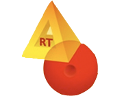

Antwerpen
-

Arto Verteltheater
Arto Verteltheater is een organisatie die niet onder één noemer te vangen valt. En dat is nu net de kracht. Het vertrekpunt is steeds de combinatie van het communicatieve en het theatrale.Lieve De Meyer vertelt met hart en ziel de meest uiteenlopende verhalen. Elke voorstelling kan in mindere of meerdere mate interactief worden gemaakt. Je kan er zelfs een workshop aan vastkoppelen waarin de kinderen mee een einde verzinnen of zelf toneelspelen!
-

Breendonk Memorial
Elk jaar bezoeken 60.000 à 65.000 leerlingen het fort. Tijdens het bezoek biedt de educatieve staf de jongeren voldoende informatie aan, zodat zij zich een nauwkeurig beeld van de geschiedenis kunnen vormen. In combinatie met een bezoek aan het Joods Museum voor Verzet en Deportatie te Mechelen is het mogelijk om naast de politieke vervolging, zoals die in Breendonk belicht wordt, ook de typische kenmerken van de rassenvervolging te behandelen.